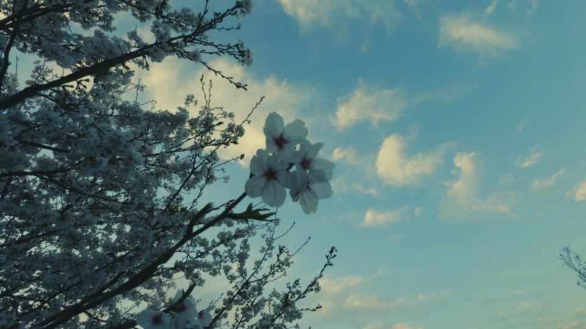
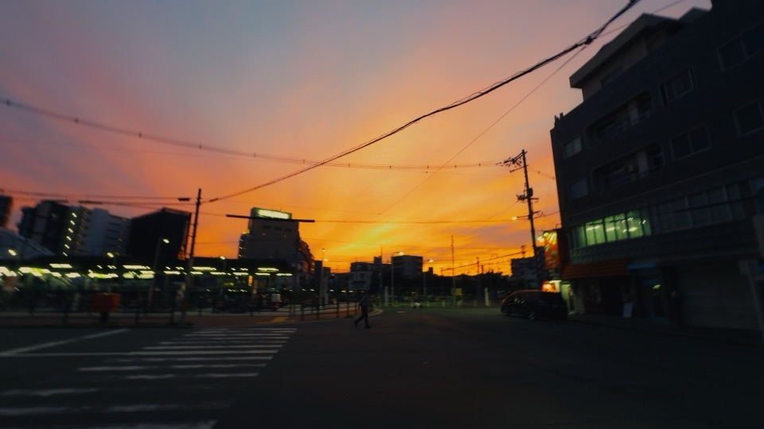
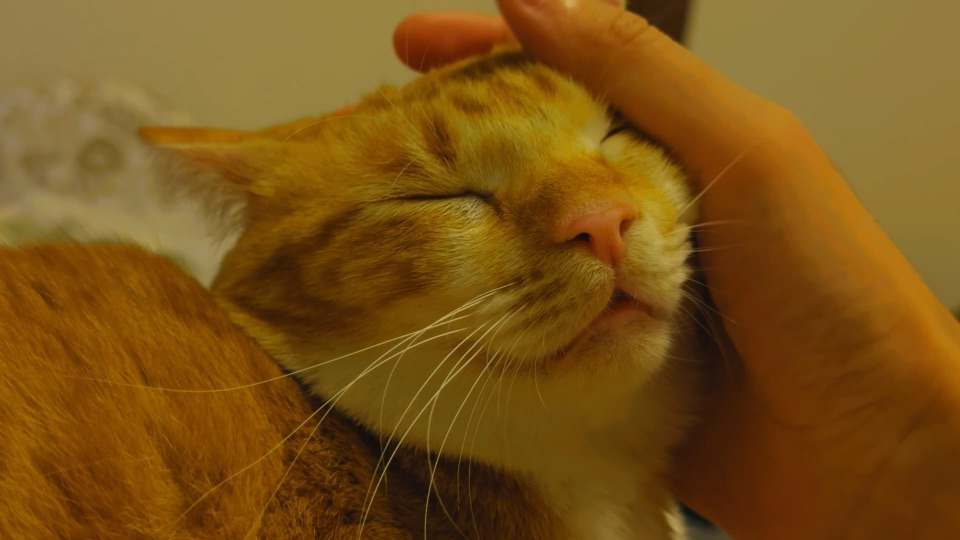
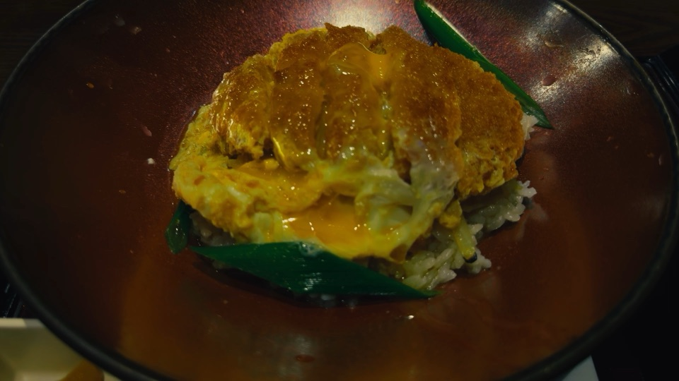
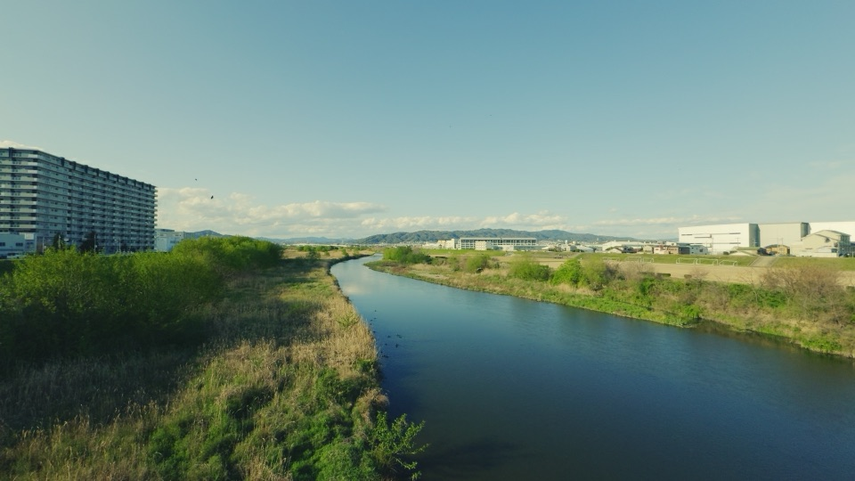

紹介文
ひとこと
撮るだけで、投稿できるVlogに。
一文
TORUTTO（トルット）は、撮った順のまま、色と文字と音をととのえて、横型の一本のVlogに仕上げるiPhoneのカメラアプリです。
100字
TORUTTO（トルット）は、撮った順のまま横型の一本のVlogに仕上げるiPhoneのカメラアプリです。雰囲気を選ぶと仕上がりがそろい、無料でも1080p・10分までの一本をロゴなしで完成できます。
300字
TORUTTO（トルット）は、横型の日常Vlogを残したいのに、編集が面倒で続かなかった人のためのiPhoneのカメラアプリです。話すところは止めるまで、景色は3・5・10秒で撮ると、素材は撮った順のまま並び、色と文字と音を重ねて一本のVlogに仕上がります。雰囲気は日常・やわらか・シネマの3つで、選ぶと仕上がりが一度にそろいます。内蔵の色は、TORUTTO自身の色づくりのプロジェクト「LUT FACTORY」で自作の数式から一から作った記録・街角・静寂・大地・新緑・夕映の6つと標準です。元の素材は書き換えません。動画や声はiPhoneの外へ送らず、字幕の文字起こしと顔の解析もiPhoneの中で行います。アカウント登録も広告もありません。無料でも1080p・10分までの一本をロゴなしで完成でき、4Kや長い一本は買い切りのTORUTTO+で作れます。
基本の情報
- 名前
- TORUTTO（トルット）
- 種類
- iPhoneのカメラアプリ（横型のVlog）
- 撮り方
- 話すところ（A・話す）は止めるまで撮れます。景色や手元（B・見せる）は3・5・10秒で自動で止まります
- 対応
- iOS 26以上のiPhone（iPhone 11以降）。iPadは対象外
- 配信
- 日本のApp Store
- 言語
- 日本語
- 価格
- 本体は無料。TORUTTO+（買い切り）は980円
- 無料でできること
- 撮影から完成まで全部。1080p・10分までの一本。完成動画にロゴは入りません
- 内蔵の色
- 記録・街角・静寂・大地・新緑・夕映の6つと標準。「LUT FACTORY」で自作の数式から作り、1つの色につき65×65×65の表を使います。Apple Logの素材には変換まで含めた専用の表を使います
- TORUTTO+で増えること
- 4Kでの完成、完成尺の上限なし、自分のLUT（.cube）の読み込み、自分の曲の読み込み
- プライバシー
- アカウント登録なし。撮った動画・声・コメント・字幕はiPhoneの外へ送りません。広告・トラッキングなし
- 発売日
- 近日公開
- 運営者
- 濵田 純平
{kind=link}
{kind=link}
{kind=link}
{kind=link}
{kind=link}
{kind=link}
{kind=link}
映像の静止画
開発者が撮った映像から書き出した静止画です（1920×1080）。





{kind=link}
{kind=link}
{kind=link}
{kind=link}
{kind=link}
{kind=link}
{kind=link}
{kind=link}
{kind=link}
{kind=link}
{kind=link}